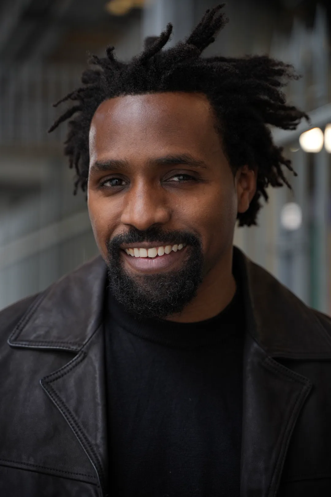
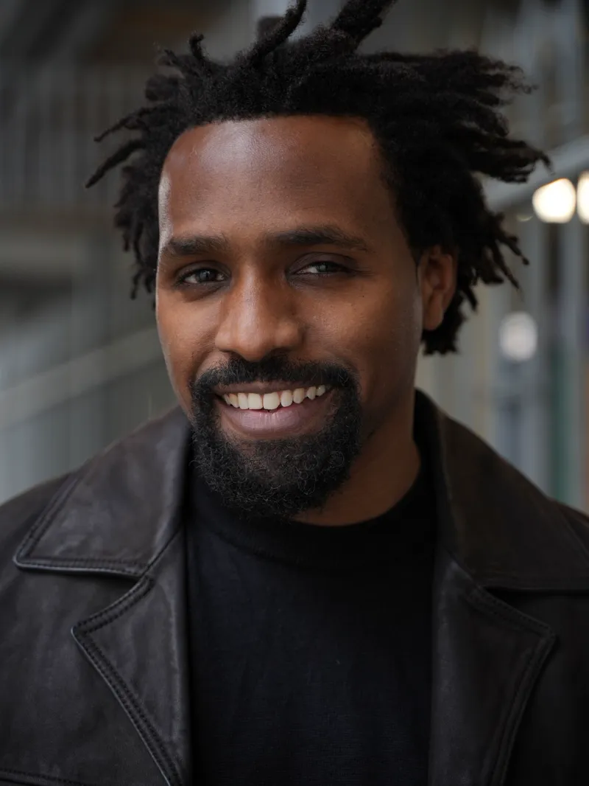
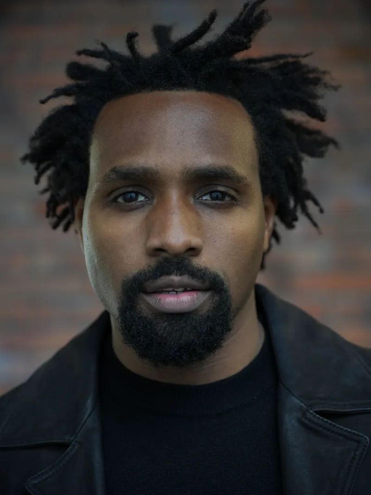
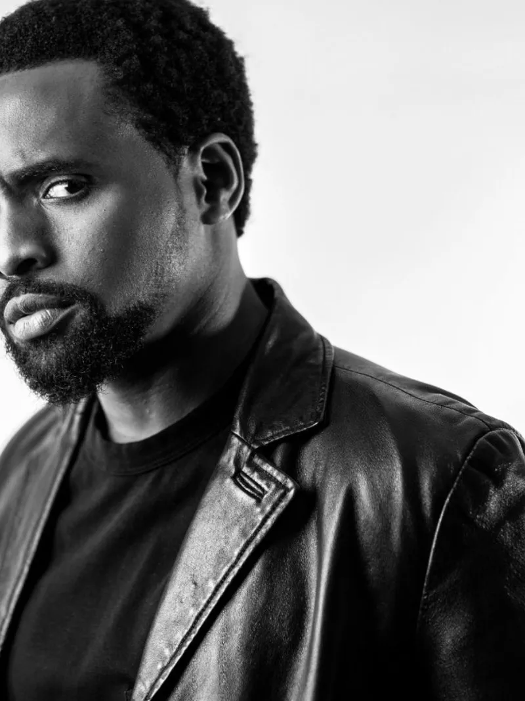
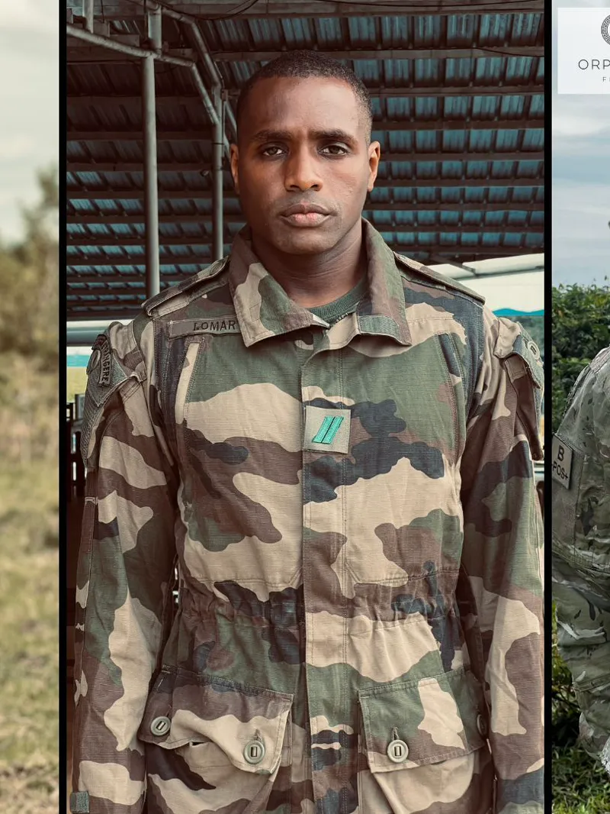
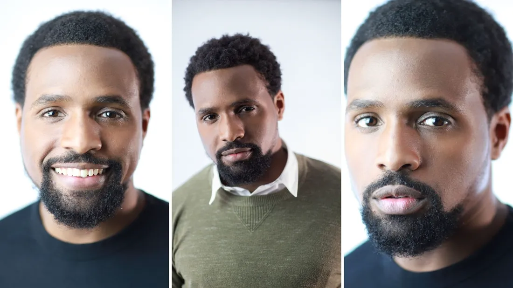

01
Acteur
Cinéma, séries, théâtre, publicité. Rôles principaux, secondaires, doublage — et le jeu d'action que je travaille depuis des années.
- Série
- Théâtre
- Doublage
- Action

Disponible — tournages & événements
Acteur◆Réalisateur◆
Consultant publicité◆Animateur d'événements
01 À propos
Devant la caméra, derrière, ou face à une salle — le même métier : tenir un public.
Formé à L'École du Jeu, je suis comédien avant tout. J'ai joué le rôle principal de la série IBOGA GREEN (Mike), foulé les planches de BOMAYE avec La Fabrik Origin, tourné en publicité, et réalisé mes propres films — RAGE et POSEIDON. Bilingue français / anglais, formé au jeu d'action et à la boxe, chanteur et danseur hip-hop.
Ce que je viens chercher sur un plateau comme dans une salle : l'instant juste. Celui où le public arrête de regarder sa montre.
02 Ce que je fais
01
Cinéma, séries, théâtre, publicité. Rôles principaux, secondaires, doublage — et le jeu d'action que je travaille depuis des années.
02
J'écris et je mets en scène mes propres projets. Du scénario au montage : l'image, le rythme, la direction d'acteurs.
03
Du côté du casting et de la direction d'acteurs comme du conseil aux marques : ce qui se joue à l'écran, et ce qui se ressent en trois secondes.
04
Avant-premières, festivals, remises de prix — et séminaires, conventions, lancements d'entreprise. Je tiens une salle, du premier mot au dernier applaudissement.
03 Animer votre événement
Animer, ce n'est pas parler dans un micro : c'est écrire une soirée qui a un début, un rythme et une fin. De l'avant-première au séminaire d'entreprise, je prends la salle en charge.
Cinéma & culture
Entreprises
04 Sélection
MikeRéal. Davy Sayns
Youssouf BA à la réalisation2024
Réalisation · Scénario · Interprétation
Rôle — Abraham TouréLa Fabrik Origin
Interprétation — campagne Président2024
05 Galerie





Faire glisser
« On ne joue pas un rôle. On le défend, le temps qu'on nous regarde. »
Youssouf BA — Acteur · Réalisateur · Animateur
Travaillons ensemble06 Contact
Réponse sous 48 h. Précisez la date, le lieu et le type de projet — je reviens vers vous avec mes disponibilités.